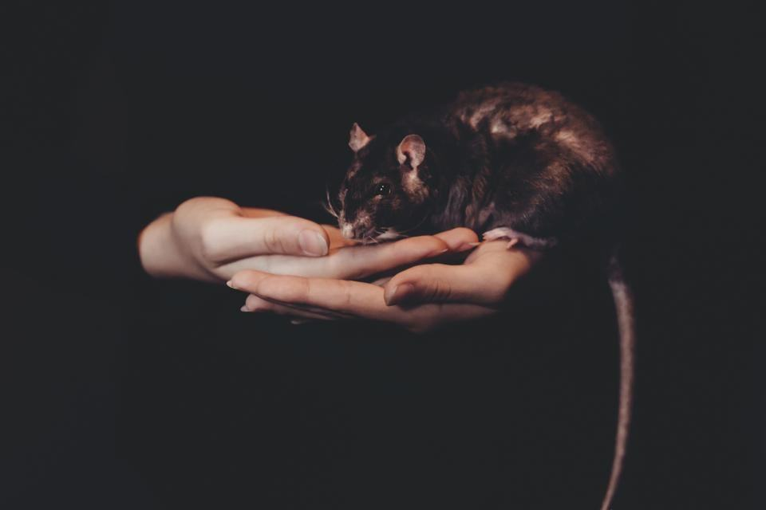
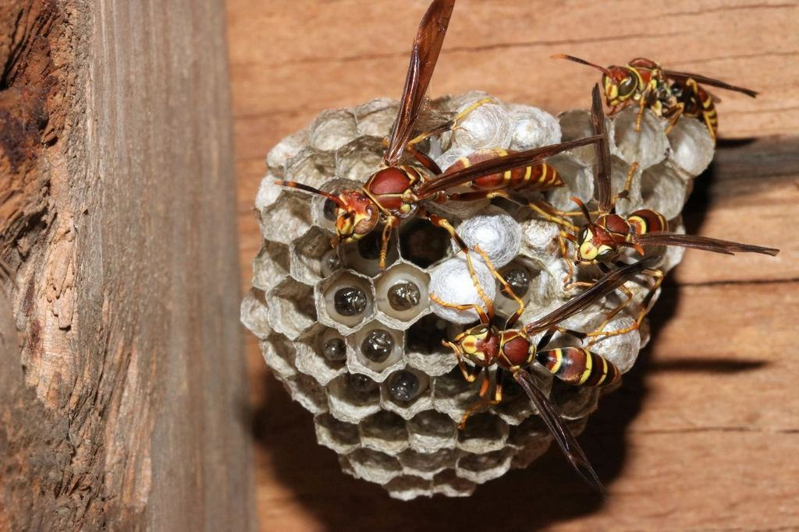
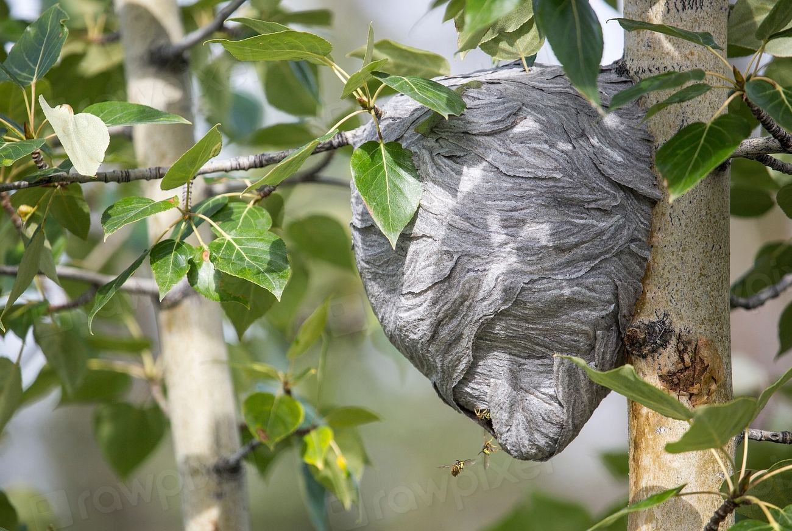
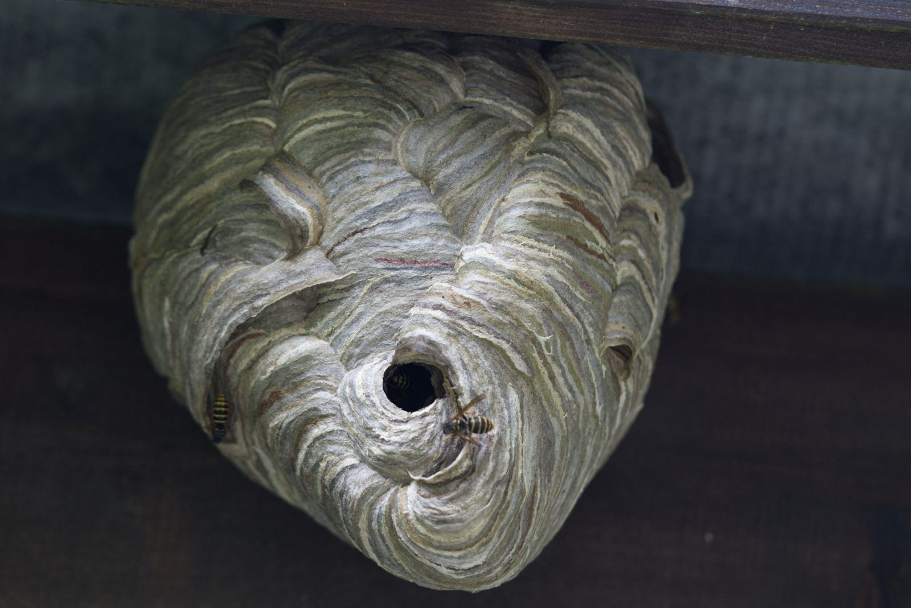
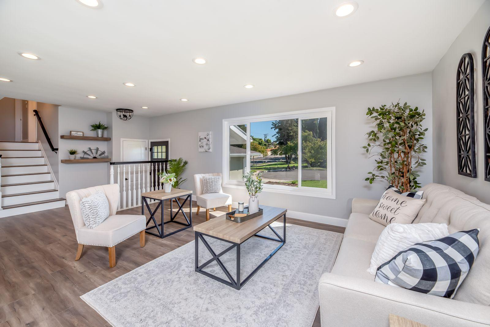

Behörigheter som håller vid revision
- Kemikalieinspektionens behörighetAlla 16 tekniker har behörighet för yrkesmässig användning av biocidprodukter för gnagar- och insektsbekämpning.
- CEPA Certified (EN 16636)Certifierade enligt den europeiska standarden för skadedjurstjänster sedan 2019.
- ISO 9001Ledningssystem för kvalitet som omfattar planering, rapportering och reklamationer.
- Arbete på hög höjdTeknikerna har utbildning för fallskydd och skylift för fågelsäkring och getingbon.
Avtal som hållit i generationer
- Tunadalsterminalen
- Sörbergs Såg
- Brf Norra Stadsberget
- Sundsvalls Bostadsstiftelse
- Kramfors kommun
- Härnösands Spannmål
- Stugbyn Indalsälven
- Medelpads Bröd
Kajer, källare och stugor
- Pågående

Tunadalsterminalen
Ny betesplan med 140 digitala stationer längs 1,2 km kaj.
- Utfört

Gnagarskydd vid sågverk
Månadsrond på virkesplan, flishall och personalbyggnad sedan 1994.
- Utfört

Brf Norra Stadsberget
Råttor i tre soprum stoppade genom ny avloppsspärr och tätning av fyra rörgenomföringar.
- Utfört

Kyrkvallens förskola
Giftfri sanering med mekaniska fällor och tätning under diskbänkar och ventilationsdon.
- Utfört

Stugby vid Indalsälven
Tolv stugor tätade mot skogsmöss inför vintersäsongen.
- Pågående

Spannmålsmagasin
Kartläggning av rismjölbagge pågår inför sanering av två silor.
Minsta möjliga gift, största möjliga noggrannhet
Gift är sista utvägen hos oss. Vi börjar alltid med tätning och mekaniska fällor, och när rodenticider behövs används de bara i låsta stationer som vi själva kontrollerar. Döda djur och betesrester lämnas till förbränning.
- 70 %av villauppdragen löses utan gift
- 0öppna betesutlägg utomhus
- 100 %av stationerna låsta och numrerade

Senaste nytt

När frosten slår till flyttar skogsmössen in – så tätar du grunden innan.

Från juni till september har vi tekniker i tjänst även lördagar.

Elias Nordin har gått klart behörighetsutbildningen och tar över distriktet norr om Härnösand.
Det här brukar folk fråga Lena om
Hittar du inte svaret? Ring eller mejla oss.
Hur snabbt kan ni komma?
Villor och brf:er får besök inom två vardagar. Industrikunder med avtal har utryckning samma dag.
Måste ni använda gift?
Nej, oftast inte. Vi börjar med fällor och tätning, och använder bara bete i låsta stationer när det verkligen behövs.
Vad ingår i villaavtalet?
Ett årligt kontrollbesök och obegränsat antal utryckningar för råttor och möss inomhus. Avtalet kostar 1 690 kr per år.
Åker ni ut till fritidshus?
Ja, i hela Medelpad och södra Ångermanland. Vi kan också komma när du inte är där om du lämnar nyckel.
Täcker hemförsäkringen sanering?
Många hemförsäkringar täcker råttor, möss och vägglöss. Vi skriver ett utlåtande som du kan skicka till försäkringsbolaget.
Är det farligt för katten?
Låsta betesstationer går inte att öppna för katter eller barn. Inomhus använder vi i regel bara snapfällor i lådor.